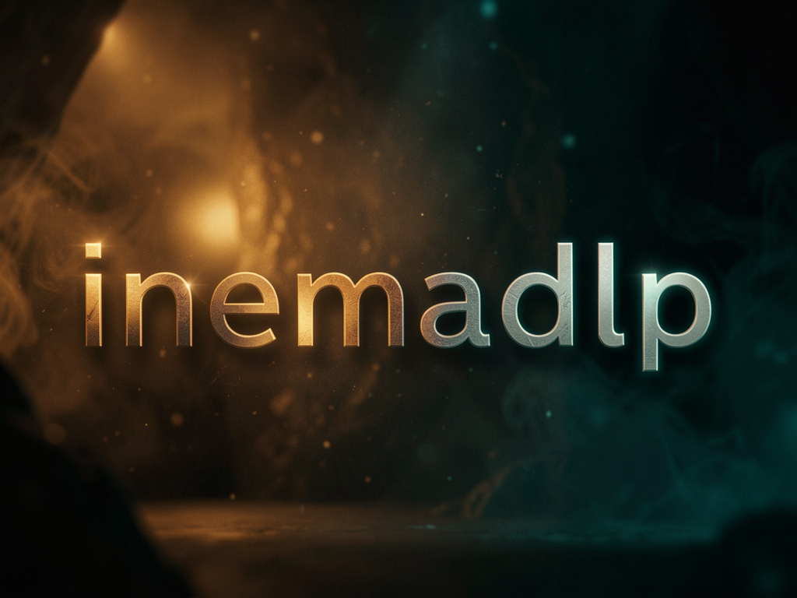

Un descargador de video y audio que funciona en tu propia máquina, protegido con contraseña, y elimina el archivo automáticamente después de 6 horas.

Abres una página en tu VPS, pegas la URL, eliges video o audio y recibes el archivo. Por debajo está el yt-dlp de siempre — la diferencia es que no necesitas usar la terminal y la descarga sale desde una IP residencial de confianza en vez de la de tu celular.
La interfaz es una PWA: la instalas en la pantalla de inicio, inicias sesión una vez con la contraseña y nunca más vuelve a pedirte que inicies sesión. Nada de apps, nada de tiendas.
Cada archivo descargado se elimina 6 horas después, y un barrido también recoge los restos de descargas fallidas. La VPS no se convierte en un depósito.
Envías las cookies de tu navegador con sesión iniciada desde la propia interfaz. Esto evita el mensaje "Sign in to confirm you're not a bot" que bloquea las IP de centros de datos.
Un solo proceso: FastAPI sirve la interfaz y la API, y un worker consume la cola con un job a la vez — a propósito, para evitar el rate limit de la fuente. Caddy se encarga del HTTPS.
La cola es serial. Dos descargas simultáneas solo aumentarían la probabilidad de bloqueo en el origen.
Falló, lo vuelves a poner en cola. Reintentar por tu cuenta contra una fuente que bloqueó solo hace que la IP se queme más rápido.
La entrega admite Range, así que si se pierde la señal en el celular, la descarga continúa desde donde se quedó — por eso existe el TTL y no se elimina con la primera descarga.
Una VPS Linux con Docker y un subdominio apuntado a ella. Nada más — ffmpeg y yt-dlp vienen dentro de la imagen.
Es el único requisito de software en la VPS.
# Ubuntu curl -fsSL https://get.docker.com | sh
Apunta un registro A a la IP de la VPS antes antes de subir: Caddy emite el certificado en el primer acceso.
# ejemplo dlp.seudominio A 203.0.113.10
En la PC o en el celular, con sesión iniciada en las fuentes desde donde descargas. De ahí salen las cookies.
# extensión (Edge/Chrome) Get cookies.txt LOCALLY
Son cinco pasos. A partir del tercero ya lo usas desde el celular.
Genera los tres secretos, escribe el .env con el permiso correcto, inicia los contenedores e imprime tu contraseña al final.
git clone https://github.com/inematds/inemadlp.git && cd inemadlp ./instalar.sh dlp.seudominio # avisa si el DNS todavía no apunta aquí
Caddy solicita el certificado en el primer acceso — de 10 a 60 segundos. ¿Prefieres hacerlo a mano en vez de usar el instalador? El README tiene el método manual.
docker compose logs -f caddy # espera "certificate obtained" curl -I https://dlp.seudominio # HTTP/2 200 = en línea
Abre el dominio, inicia sesión con la contraseña y usa "Agregar a la pantalla de inicio". La sesión no expira: inicias sesión una vez y listo.
# en el navegador del celular https://dlp.seudominio
Sin esto, YouTube rechaza la solicitud: la IP de la VPS es de un centro de datos. En la PC, con Edge o Chrome con la sesión iniciada en YouTube:
cookies.txt;cookies.txt de la carpeta Downloads: le da acceso a tu cuenta.Vuelve a hacerlo solo cuando falle una descarga: la interfaz te avisa "cookies expiradas".
# acceso directo, solo en la máquina Linux con Firefox con sesión iniciada DLP_URL=https://dlp.seudominio DLP_UPLOAD_TOKEN=... ./sync-cookies.sh # -> {"cookies": 81}
Pega la URL, elige Video (MP4 hasta 1080p) o Audio (M4A) y espera. El progreso aparece en la lista y el botón "Descargar" aparece al final.
# el archivo está disponible durante 6 horas y luego desaparece # ¿quieres más tiempo? DLP_TTL_HOURS en .env
La v1 está completa y verificada de punta a punta. Lo que no está aquí se descartó a propósito: es una herramienta personal, no un producto.